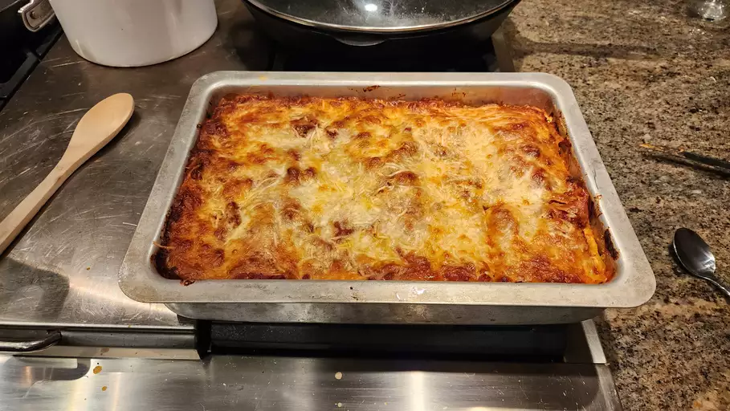

https://www.allrecipes.com/recipe/23600/worlds-best-lasagna/
My Odin Project Recipe Website
Lasagna

Description
This lasagna recipe takes a little work, but it is so satisfying and filling that it's worth it
Ingredients
- 1 pound sweet Italian sausage
- ¾ pound lean ground beef
- ½ cup minced onion
- 2 cloves garlic, crushed
- 1 (28 ounce) can crushed tomatoes
- 2 (6.5 ounce) cans canned tomato sauce
- 2 (6 ounce) cans tomato paste
- ½ cup water
- 2 tablespoons white sugar
- 4 tablespoons chopped fresh parsley, divided
- 1 ½ teaspoons dried basil leaves
- 1 ½ teaspoons salt, divided, or to taste
- 1 teaspoon Italian seasoning
- ½ teaspoon fennel seeds
- ¼ teaspoon ground black pepper
- 12 lasagna noodles
- 16 ounces ricotta cheese
- 1 egg
- ¾ pound mozzarella cheese, sliced
- ¾ cup grated Parmesan cheese
STEPS
- Gather all the ingredients
- Cook sausage, beef, onion and garlic over a medium heat until well browned
- Stir in crushed tomatoes, tomato sauce, paste and water.
- Season with sugar, parsley, basil, salt, italian seasoning, fennel and pepper.
- Simmer covered for about 1 1/2 hours, stirring
- Bring a pot of lightly salted water to the boil, cook the noodles for 8-10 minutes, drain and rinse with cold water
- In a mixing bowl, combine ricotta cheese with egg, 2 tablespoons of parsley and 1/2 a teaspoon of salt.
- Heat the oven to 190 degrees C
- To assemble, spread Meat sauce in the bottom of a 9x13 inch baking dish. Arrange 6 noodles over the sauce. Spread with 1/2 of the ricotta cheese mixture. Top with 1/3 of the mozzarella cheese slices. Spoon 1 1/2 cups meat sauce over mozzarella, and sprinkle with 1/4 cup Parmesan cheese.
- Repeat layers, and top with remaining mozzarella and Parmesan cheese. Cover with foil: to prevent sticking, either spray foil with cooking spray or make sure the foil does not touch the cheese.
- Bake in the preheated oven for 25 minutes. Remove the foil and bake for an additional 25 minutes.
- Rest lasagna for 15 minutes before serving.